The stock Eureka Mignon Notte Espresso Grinder always felt like a grinder with great fundamentals but a workflow that needed refinement. The burr set is capable, the build quality is excellent for the price, and the compact form factor fits almost anywhere.
But my version doesn't fight me anymore.
Over time, I modified this grinder into something that fits exactly how I make coffee every single day, and honestly, workflow efficiency contributes heavily to repeatability and consistency, which ultimately contributes to shots you actually enjoy drinking.
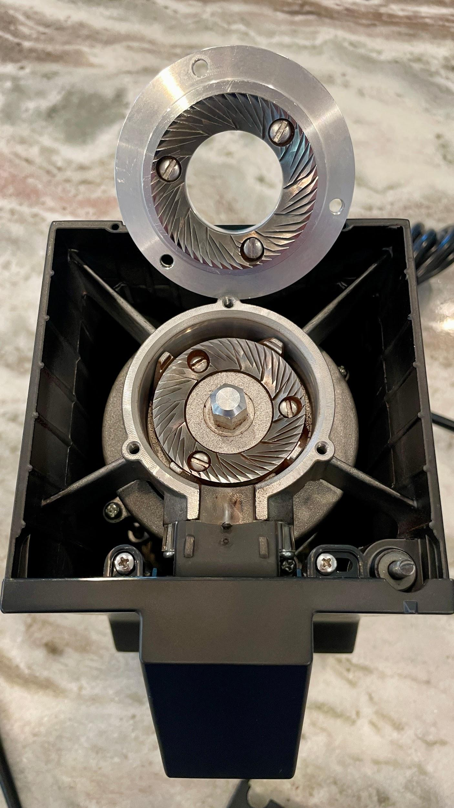
The Setup
Here's the exact configuration I'm currently running:
- FusedLine single dosing funnel with bellows
- ARO Espresso Grinder Setting Dial
- Cremaloop tilted base with magnetic dosing cup stand
- Portafilter switch replacement converting the grinder from momentary-on to constant-on operation
Together, these upgrades transformed the grinder from "good with quirks" into something that genuinely feels tailored to how I brew coffee.
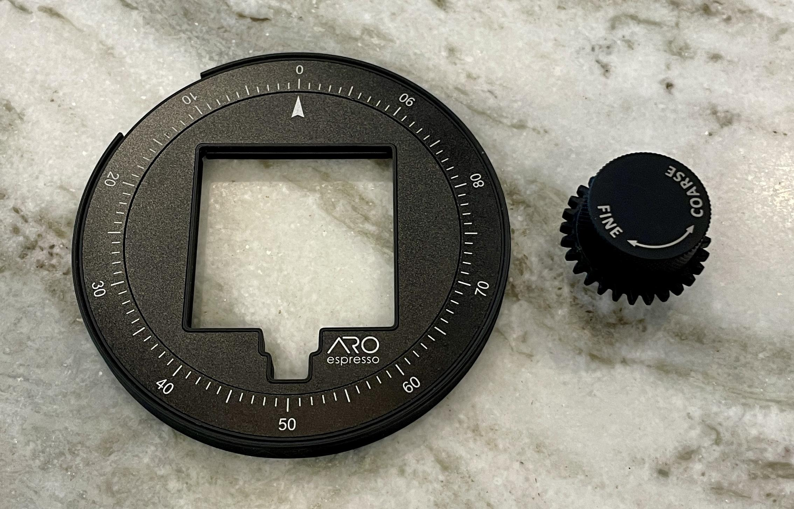
Single Dosing & Retention
The biggest improvement came from switching to single dosing.
Using the FusedLine bellows setup, my retention now typically sits between 0.1g and 0.2g, depending on how oily the beans are. That's an enormous improvement over the stock workflow.
I also utilize RDT (Ross Droplet Technique) before grinding. A very light mist on the beans helps reduce static charge and keeps particle distribution more even. Combined with the bellows and tilted base, it keeps the workflow impressively clean.
The result:
- Less waste
- Better consistency
- Cleaner puck prep
- Easier repeatability between coffees
And because we usually have three different coffees in rotation at any given time, repeatability matters a lot in this house.
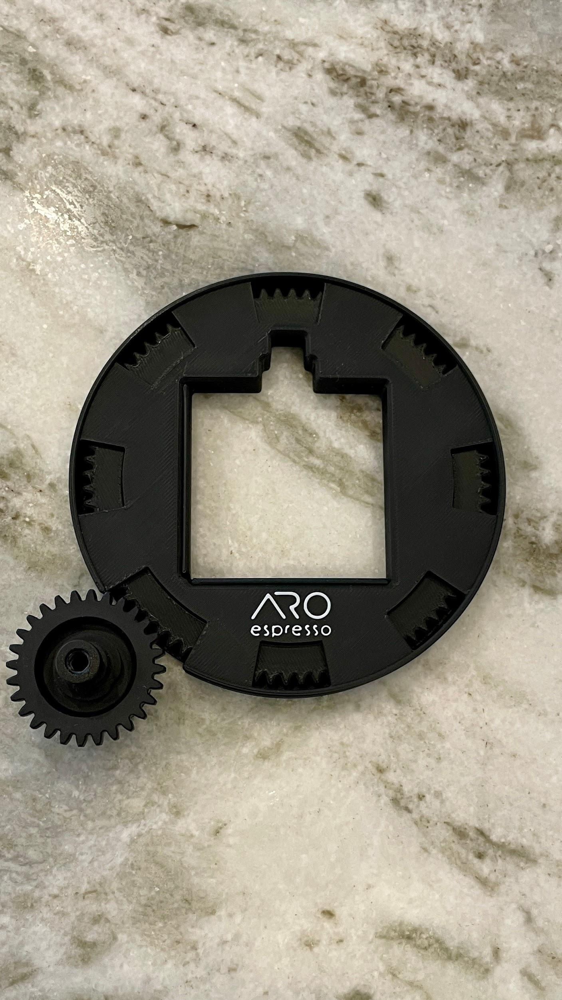
The ARO Dial Completely Changes the Grinder
The stock Eureka adjustment knob is probably my least favorite part of the grinder.
The ARO Espresso dial system fixes that immediately.
The oversized dial makes micro-adjustments dramatically easier to track and return to later, especially when bouncing between brew methods.
And for my firearms people, dialing this grinder in honestly feels a lot like dialing elevation on a long-range precision scope.
Tiny adjustments matter.
You develop references.
You learn your holds.
You track your settings.
There's something deeply satisfying about it.
Because I'm switching between espresso, moka pot, Hario Switch brews, and cold brew regularly, the ability to confidently return to known settings is huge.
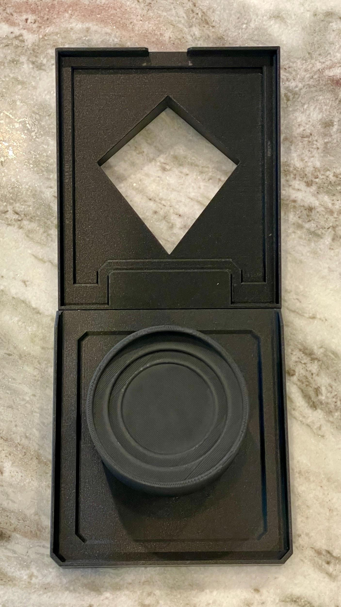
This grinder handles:
- My Gaggia Classic Pro E24 Espresso Machine
- Moka pot brewing
- Hario Switch Immersion Dripper
- Cold brew setups
…without becoming frustrating to recalibrate every time.
That flexibility is where the ARO system really earns its keep.
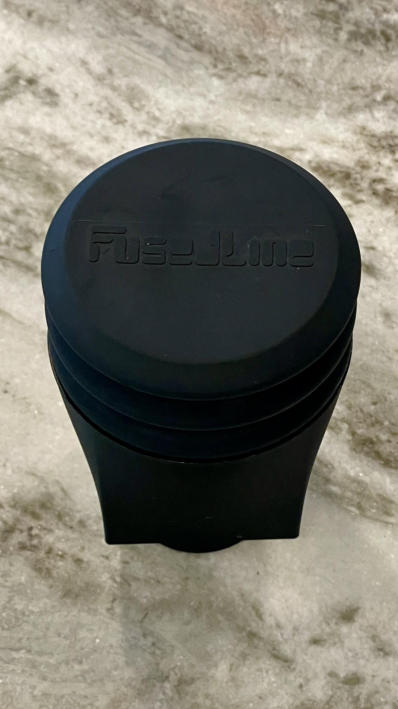
The Cremaloop Base Improves More Than Just Looks
The Cremaloop tilted base and dosing stand ended up being more useful than I originally expected.
The tilt helps grounds exit the chute more naturally, while the magnetic dosing cup stand keeps everything centered and aligned during grinding.
It sounds minor until you live with it daily.
Small workflow annoyances add up over time. Small improvements do too.
And visually, the straight black aesthetic ties in perfectly with the rest of my coffee bar setup. It looks intentional instead of pieced together.
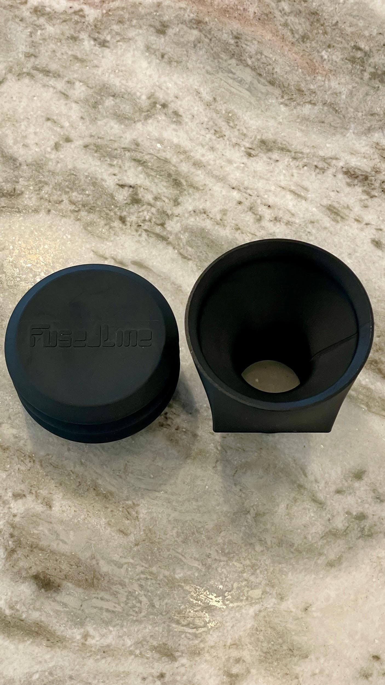
The Constant-On Switch Mod Is Surprisingly Great
Changing the grinder from a momentary press switch to a constant-on switch seems like a tiny modification.
It isn't.
Not having to hold the portafilter against the switch the entire grind makes workflow smoother immediately, especially while managing dosing cups and distributing grounds. I can be prepping the portafilter with papers and the dosing funnel while I wait.
Flip it on.
Grind.
Bellows.
Flip it off.
Simple.
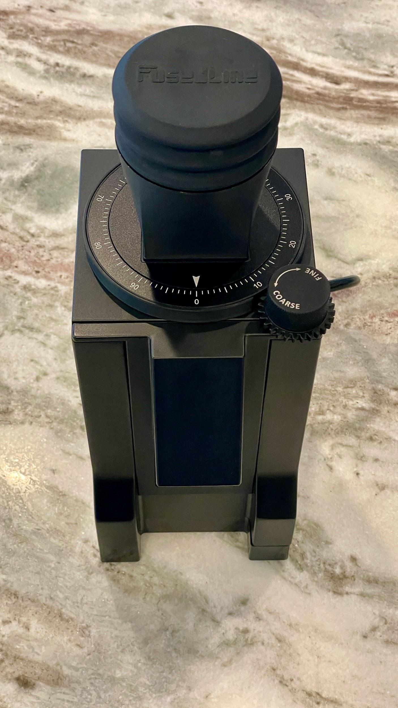
Grind Performance
At the core of all this, the Notte still delivers what made it appealing in the first place:
- Solid grind consistency
- Reliable espresso performance
- Compact footprint
- Excellent build quality for the money
The modifications don't magically turn it into a commercial grinder, but they absolutely unlock more of what the platform is capable of.
And that's really the theme of this grinder as a whole.
The foundation was always good.
The workflow just needed refinement.
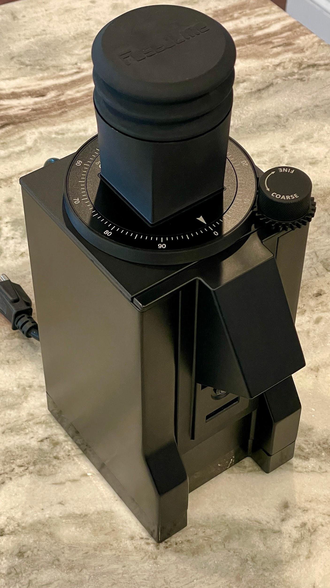
The Tradeoff
Here's the reality.
Once you add:
- The ARO dial
- Single-dose hardware
- Bellows
- Tilt base
- Switch mods
…you're no longer in "budget grinder" territory financially.
There are grinders at higher price points that may outperform this setup out of the box.
But they also won't necessarily feel this personalized.
This grinder evolved around how I actually brew coffee instead of forcing me to adapt to it.
That has value.
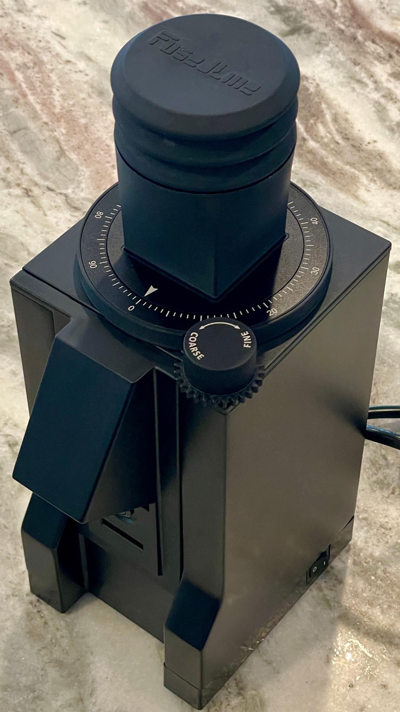
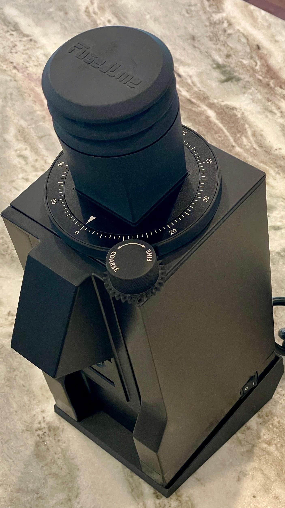
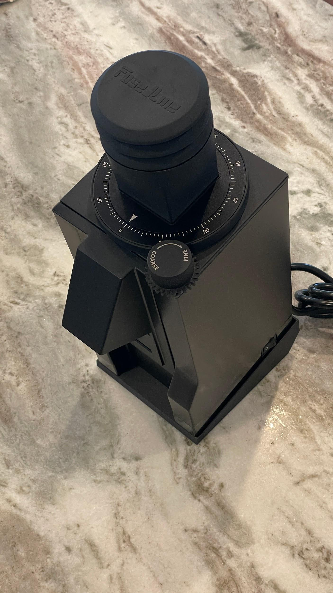
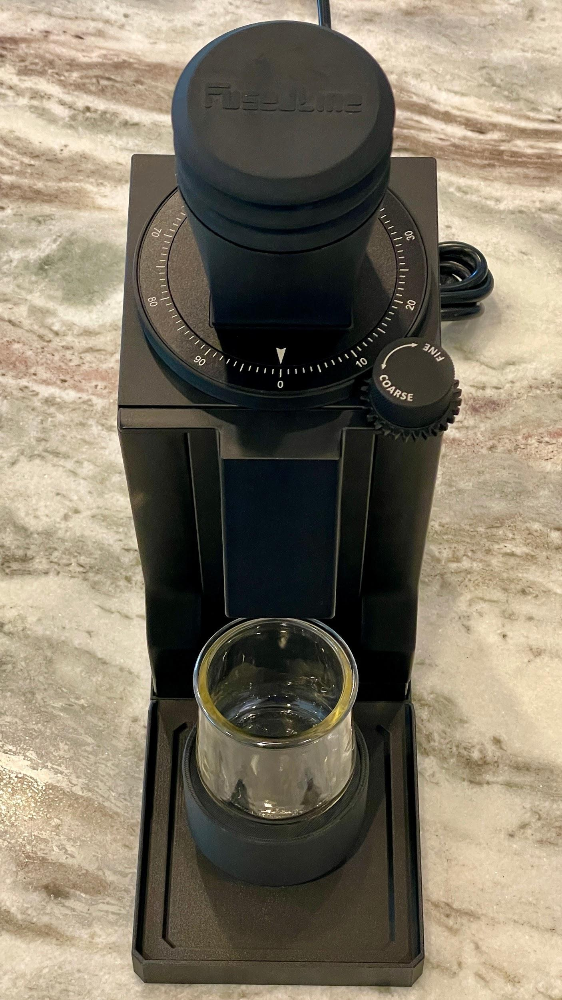
The Eureka Mignon Notte Espresso Grinder started as a capable entry-level espresso grinder. What I ended up with feels much closer to a purpose-built single dosing workflow machine tailored around my coffee habits. And honestly, that's why I enjoy it so much. Not because it's perfect. Because every modification solved a real problem I encountered in daily use.